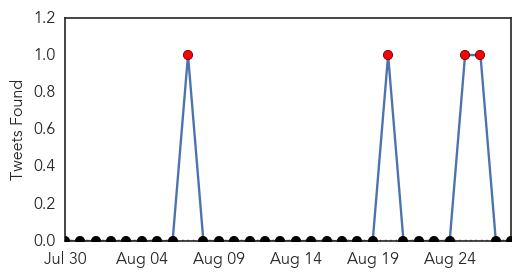
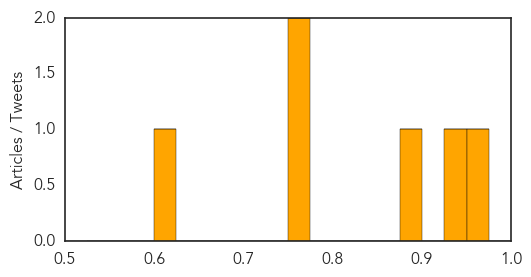

MERS
30-Day Web Trend
0 alerts, 0 warnings

30-Day Twitter Trend
4 alerts, 0 warnings

Article Locations

Article Confidences

Top Articles:
- 0.998
- Riyadh, Jordan each report 2 new MERS cases
- 0.997
- Saudi Arabia sees Mers deaths surge
- 0.996
- Saudi Arabia sees Mers deaths surge
- 0.996
- Saudi Arabia sees Mers deaths surge
- 0.995
- Saudi Arabia Reports Surge in MERS Fatalities
- 0.992
- Deaths from MERS virus surge in Saudi Arabia
- 0.984
- Middle East respiratory syndrome coronavirus: transmission, virology and therapeutic targeting to aid in outbreak control
- 0.981
- KBS World Radio
- 0.981
- Saudi Arabia may ban anyone in contact with MERS patients from performing Hajj - Xinhua
- 0.959
- Jordan reports first coronavirus death in 2015
- 0.941
- Deaths from MERS virus improvement in Saudi Arabia
- 0.889
- Arresting MERS: National Guard health staff barred from Haj
- 0.820
- MERS worry as Hajj dates approach
Top Tweets:
-
No tweets found for Aug 28, 2015
Meningitis
30-Day Web Trend
2 alerts, 0 warnings

30-Day Twitter Trend
1 alerts, 0 warnings

Article Locations

Article Confidences
Top Articles:
- 0.965
- Fever warning over new meningitis jab
- 0.937
- Parents in the East of England can get their babies vaccinated for MenB as of September
- 0.889
- Tuberculosis: Causes, Symptoms and Treatments
- 0.753
- New vaccine recommended for college-age teens
- 0.750
- Mecca & Pilgrimage l مكة والحج
- 0.612
- State Investigating Report of Viral Meningitis at Deane Bozeman School
Top Tweets:
-
No tweets found for Aug 28, 2015